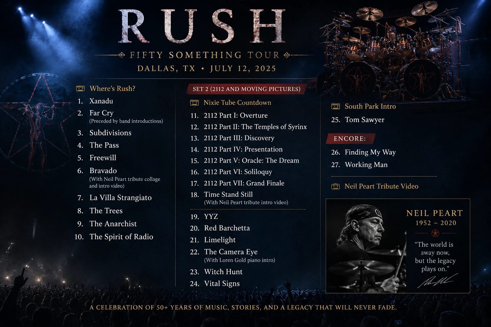

On July 13, 2026, I saw Rush at Dickies Arena in Fort Worth.
Even typing that sentence feels strange.
After Neil Peart died, I assumed I would never be able to say that I had seen Rush again. Geddy Lee and Alex Lifeson could still perform together, of course, but Neil was not simply the drummer who happened to sit behind them.
He was one-third of Rush.
He was the precision, the thunder, the ideas, the strange time signatures and many of the words that gave the music its meaning.
So I went into the concert excited, grateful and honestly a little unsure of how I was going to feel.
It turned out to be an amazing show.
It was also one of the most emotional concerts I have ever experienced.
One of the first people I looked up to
Neil Peart was one of my first real idols.
I never met him. He never knew who I was. Still, his work became a meaningful part of my life.
Obviously, there was the drumming. His playing was technical, powerful and incredibly precise. He approached the drums like both an athlete and an artist, constantly refining his technique and rebuilding his approach.
But Neil was much more than a drummer to me.
He was a writer, a reader, a traveler and someone who remained curious about the world throughout his life. He made it seem worthwhile to keep learning, even after you had already become one of the best people in the world at what you did.
That stayed with me.
His lyrics dealt with individuality, isolation, grief, ambition, fear, aging and the pressure to become whatever the world expects you to be. He trusted the people listening to understand complicated ideas.
As someone who creates things for a living, I have always respected that.
Neil never seemed interested in standing still.
The hardest drum seat in rock
Anika Nilles had what might be one of the hardest jobs any drummer could accept.
Anyone sitting behind a drum kit for Rush was going to be compared with Neil Peart. There was no avoiding that.
You could tell it was not Neil back there.
Of course you could.
But Anika did not appear to be trying to impersonate him or erase what he had done. She played the music with enormous skill while still bringing something of herself to the performance.
The audience understood what she was being asked to do.
I did not feel hostility from the crowd. I did not hear people demanding that she somehow become Neil. She received a tremendous amount of applause, respect and genuine love throughout the night.
She deserved it.
There will never be another Neil Peart, but honoring someone does not require pretending to be them.
Anika honored him by doing justice to the music.
Neil was still part of the concert
One of the best decisions the band made was refusing to pretend that Neil was not missing.
They brought him into the show.
Between songs, videos appeared featuring pieces of Neil’s life, his humor and his voice. There were old clips, spoken segments, tribute collages and introductions woven into the performance.
“Bravado” was preceded by a Neil Peart tribute collage. “Time Stand Still” opened with another tribute video. The night eventually ended with Neil on the screen again.
Whenever his face or voice appeared, the feeling inside the arena changed.
For a moment, it was not simply thousands of people watching an old video.
It was an arena full of people remembering the same person together.
That was when the reality of the night hit me hardest.
I did not cry, but there were several moments when I could not quite process everything I was feeling. I was happy to hear the songs alive again. I was grateful to see Geddy and Alex playing together.
At the same time, every reminder of Neil made his absence feel enormous.
It was difficult to watch, but it was handled beautifully.
The show never felt like Rush was trying to continue as though nothing had happened.
It felt like a celebration with someone important missing from the table.
The Pass was the moment that got me
“The Pass” was amazing.
That song has always carried emotional weight, but hearing it during this particular concert made every word land differently.
It stopped feeling like a song I had heard many times and became something immediate again.
There are concerts where you sing along, cheer and wait for the next favorite song.
Then there are moments when you simply stand still and take everything in.
“The Pass” was one of those moments for me.
I could not separate the song from the reason everyone was gathered in that arena. We were there to celebrate Rush, but we were also there because we missed Neil.
Thousands of people were experiencing different memories, different losses and different chapters of their lives through the same music.
That is a difficult feeling to explain to someone who has never had an artist affect them that deeply.
The song I kept hoping to hear
I was really hoping they would play “Losing It.”
They did not, but I kept thinking about it throughout the night.
The song is about artists growing older and watching abilities that once defined them begin to disappear. It asks what happens when the mind remembers what the body can no longer do.
That idea clearly stayed with Neil.
When discussing the end of his performing career in 2015, he wrote that he would rather step away from drumming than face the predicament described in “Losing It.”
That knowledge makes the song even more difficult to hear now.
Neil understood that his drumming was physically demanding. He compared it to an athletic undertaking and recognized that there would eventually come a time when his body could no longer perform at the level he demanded from himself.
There is something heartbreaking about an artist being aware of that possibility long before it arrives.
At the same time, there is dignity in knowing when to step away.
The artist does not disappear simply because the performance ends.
The work remains.
A life filled with success and unimaginable loss
Neil’s life included incredible success, but it also contained a level of tragedy that is difficult to comprehend.
Within a ten-month period beginning in 1997, he lost his 19-year-old daughter, Selena, in a car accident and then lost his wife, Jackie, to cancer.
Afterward, Neil stepped away from Rush.
He got on his motorcycle and began traveling, eventually covering approximately 55,000 miles across much of North America, through Mexico and into Belize.
He later wrote about that period in Ghost Rider: Travels on the Healing Road.
It was not a glamorous vacation.
He was trying to survive grief.
Eventually, he found his way back to life, writing and music. The fact that he returned to Rush at all says something about the strength it must have taken to rebuild after losing nearly everything.
His story was tragic, but it was not only tragic.
He found love again. He became a father again. He wrote books, recorded more music and continued traveling. He lived through terrible loss without allowing that loss to become the only thing his life meant.
I hope someone eventually makes a thoughtful biographical film about him.
His life deserves more than a montage of drum solos.
All of 2112 and Moving Pictures
The second set was unbelievable.
They performed the complete seven-part “2112” suite, beginning with “Overture” and continuing through “Grand Finale.”
Then they played all seven songs from Moving Pictures: “Tom Sawyer,” “Red Barchetta,” “YYZ,” “Limelight,” “The Camera Eye,” “Witch Hunt” and “Vital Signs.”
“Witch Hunt” was one of the highlights of the entire concert for me.
“The Camera Eye” began with a piano introduction from Loren Gold, while “Time Stand Still” arrived with another emotional Neil tribute.
The first set was just as strong, moving through “Xanadu,” “Far Cry,” “Subdivisions,” “The Pass,” “Freewill,” “Bravado,” “La Villa Strangiato,” “The Trees,” “The Anarchist” and “The Spirit of Radio.”
Then they returned for an encore of “Finding My Way” and “Working Man.”
It was not a safe little greatest-hits performance.
It felt like a real Rush concert: ambitious, unusual, emotional and occasionally ridiculous in exactly the way a Rush concert should be.
The complete Fort Worth setlist

It was the right ending.
Rush came back without replacing Neil
Calling this a normal reunion does not feel accurate.
Rush came back. Geddy and Alex played the music again. Anika stepped into the most intimidating drum position imaginable, and Loren Gold helped expand what the band could recreate onstage.
An arena full of people got to hear these songs together again.
But Neil was not replaced.
That is what made the night work.
The concert acknowledged that something irreplaceable had been lost. It did not ask the audience to forget Neil so the band could move forward.
Instead, his absence became part of the experience.
I miss Neil Peart.
That might sound strange because I never knew him personally, but art creates relationships that do not follow normal rules. Someone can influence how you think, how you create and how you understand the world without ever meeting you.
Neil was that person for me.
He was that person for many of us.
Rush came back without Neil behind the drums.
But through the songs, the videos, his voice and the love inside that arena, he was still everywhere.
This article is different from what I normally publish on the [JasonArts blog](https://www.jasonarts.com/blog), but it belongs here.
It is my way of saying thank you.
Sources
Rush Fifty Something Tour: https://www.rush.com/tour/fifty-something/
Official Neil Peart biography: https://www.rush.com/band/neil-peart/
Ghost Rider: Travels on the Healing Road: https://ecwpress.com/products/ghost-rider
Neil Peart’s 2015 retirement reflection: https://www.2112.net/powerwindows/transcripts/20151200drumhead.htm
July 13, 2026 Fort Worth setlist: https://www.setlist.fm/setlist/rush/2026/dickies-arena-fort-worth-tx-4b725f0a.html